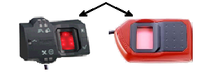

|
|
|
|
|
|
|
|
In Vijeo Designer, you can capture and store fingerprints using one of the following dialog boxes:
|
Dialog Box Name |
Access from: |
Description |
|
Create User - Project |
|
The Create User - Project dialog box enables you to add one or more users without defining their security groups. You can define user names and passwords, and capture fingerprints. |
|
Create User - Target |
|
The Create User - Target dialog box enables you to add one user at a time and define the security group the user belongs to. In this dialog box, you can define user names, passwords, and capture fingerprints. |
|
Record Fingerprints |
|
The Record Fingerprints dialog box enables you to add or update fingerprint data for a specific user. If the user already has a fingerprint record, you will be prompted to delete the existing fingerprint record first. |

The Biometric Switch and the Common Security features cannot co-exist in a project. Disable the Common Security in order to use the Biometric Switch feature.
When you create a new user, the user is added to the Project User List which is shared among all the targets in the project. When you want the user on a particular target only, move the user to a user group associated with just that target.
There is an inactivity timeout of 10 seconds for biometric switch. If during a fingerprint capturing process, the biometric switch remains inactive for more than 10 seconds, the biometric switch resets and the captured fingerprints will be lost.
The biometric switch does not prevent you from scanning 3 different fingers; however, you cannot control which one of the three fingerprints is accepted and recorded. This action may produce unpredictable results.
To capture fingerprints:
Connect the biometric switch to the USB port of the editor PC. For more information, see Section 24.9, Biometric Switch.
Open one of the Create User - Project, Create User - Target, or Record Fingerprints dialog boxes. For information on how to access these dialog boxes, see the above table. If you are in Create User - Project or Create User - Target dialog boxes, select the Use Fingerprints check box. Click Start.
Place the user's first finger on the biometric switch sensor. Refer to the following image for the correct orientation of the biometric switch.
|
Top |
|
 |
Follow the direction of the arrows next to the fingerprint image to adjust the finger. The green bar indicates the quality of the scan. When the quality of scan is acceptable, the biometric switch records the fingerprint.

If you are unable to capture a fingerprint image within 30 seconds, the scan ends and you will have to click Start to scan again.
Repeat steps 3 and 4 for user's first finger. You must capture fingerprint images of the same finger.
Choose a different finger and repeat steps 3 and 4 to capture user's second fingerprint. You must capture 3 fingerprint images of the same finger.
Click OK to save and close the dialog box. In the Create User - Project dialog box, click Add User to save and add another user.